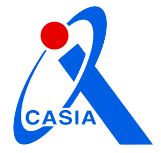

PhD · Pattern Recognition & Intelligent Systems
Huanxuan Liao 廖桓萱
I am a third-year PhD student in Pattern Recognition and Intelligent Systems at the University of Chinese Academy of Sciences (UCAS)
and the 
Research statement
My research sits at the intersection of natural language processing and machine learning. I study Long Context Modeling, Efficient Reasoning, Efficient Attention and Architecture, and Long Video Understanding in large language models (LLMs), including multimodal settings. Broadly, I aim to make LLMs more practical and accessible in real-world applications through two complementary directions: improving models for efficient deployment, and advancing smaller, economical models for efficient reasoning.
Education & Background
PhD in Pattern Recognition and Intelligent Systems
University of Chinese Academy of Sciences (UCAS) 2023 - Present
Institute of Automation, Chinese Academy of Sciences (CASIA) 2023 - Present
B.Eng. in Intelligence Science and Technology
North China Electric Power University (NCEPU) 2019 - 2023
Graduated with honors, Outstanding Graduate
Recent News
- Apr 2026
- Mar 2026
- Nov 2025
-
Oct 2025
Award Awarded National Scholarship by Ministry of Education at CASIA 🏆
- May 2025
- Dec 2024
Publications
View on Google Scholar (* stands for equal contribution)
Conference Papers
Preprints
Collaborative Works
Awards & Honors
Scholarships & Honors
-
National Scholarship (国家奖学金)
Ministry of Education
CASIA (2025) - NCEPU (2021-2022, 2 consecutive years). Top scholarship in China; 0.2% domestically
-
Climbing Second Prize Scholarship
Institute of Automation, CAS, 2024
Top scholarship in CASIA
-
Beijing Outstanding Graduate Awards
Beijing Ministry of Education, 2023
Top graduate in Beijing
Competitions
-
National Third Prize
Information Security Competition, 2022
-
National Excellence
College Student Innovation and Entrepreneurship Project, 2021
Academic Services
Conference Reviewing
- ACL ARR 2024, 2025, 2026
- ICML 2026
- NeurIPS 2025
- ICLR 2025
- AAAI 2026
Community Contributions
- Awesome-LLM-Long-Context-Modeling 2.0k+
- LCLM-Horizon Survey Core Contributor
- NVIDIA/kvpress Contributor